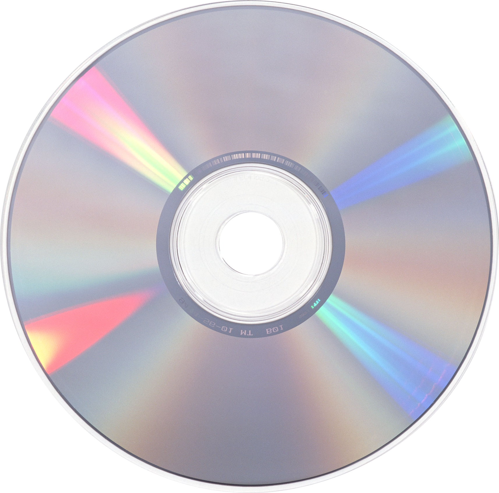

O
o[]
✎
:]
☰
🌐
About
Spellen
Log
Muziek
Recepten
Contact
Gorillaz - Gorillaz
Blur - The great escape
Soft Cell - Non-Stop Erotic Caberet
Doe Maar - 4us
5 8 6 - New Order
Getting Away with It - Electronic
Embarrassment - Madness
Hallelujah (Club Mix) - Happy Mondays
